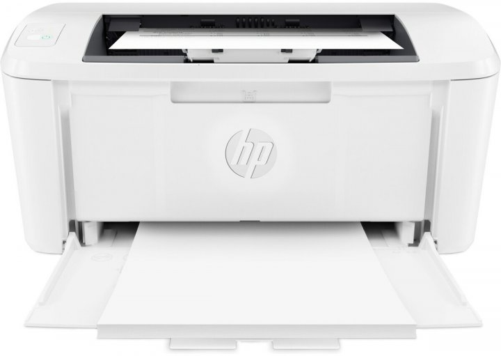

Основы ввода и вывода информации
Компьютер обменивается информацией с внешним миром с помощью периферийных устройств. Только благодаря периферийным устройствам человек может взаимодействовать с компьютером, а также со всеми подключенными к нему устройствами. Любое подключенное периферийное устройство в каждый момент времени может быть или занято выполнением порученной ему работы или пребывать в ожидании нового задания. Влияние скорости работы периферийных устройств на эффективность работы с компьютером не меньше, чем скорость работы его центрального процессора. Скорость работы внешних устройств от быстродействия процессора не зависит. Наиболее распространенные периферийные устройства приведены на рисунке:
Периферийные устройства делятся на устройства ввода и устройства вывода. Устройства ввода преобразуют информацию в форму понятную машине, после чего компьютер может ее обрабатывать и запоминать. Устройства вывода переводят информацию из машинного представления в образы, понятные человеку.
Ниже приведена классификация устройств ввода:
Самым известным устройством ввода информации является клавиатура (keyboard) – это стандартное устройство, предназначенное для ручного ввода информации. Работой клавиатуры управляет контроллер клавиатуры, расположенный на материнской плате и подключаемый к ней через разъем на задней панели компьютера. При нажатии пользователем клавиши на клавиатуре, контроллер клавиатуры преобразует код нажатой клавиши в соответствующую последовательность битов и передает их компьютеру. Отображение символов, набранных на клавиатуре, на экране компьютера называется эхом. Обычная современная клавиатура имеет, как правило, 101-104 клавиши, среди которых выделяют алфавитно-цифровые клавиши, необходимые для ввода текста, клавиши управления курсором и ряд специальных и управляющих клавиш. Существуют беспроводные модели клавиатуры, в них связь клавиатуры с компьютером осуществляется посредством инфракрасных лучей.
Наиболее важными характеристиками клавиатуры являются чувствительность ее клавиш к нажатию, мягкость хода клавиш и расстояние между клавишами. На долговечность клавиатуры определяется количеством нажатий, которые она рассчитана выдержать. Клавиатура проектируется таким образом, чтобы каждая клавиша выдерживала 30-50 миллионов нажатий.
К манипуляторам относят устройства, преобразующие движения руки пользователя в управляющую информацию для компьютера. Среди манипуляторов выделяют мыши, трекболы, джойстики.
1. Мышь - предназначена для выбора и перемещения графических объектов экрана монитора компьютера. Для этого используется указатель, перемещением которого по экрану управляет мышь. Мышь позволяет существенно сократить работу человека с клавиатурой при управлении курсором и вводе команд. Особенно эффективно мышь используется при работе графическими редакторами, издательскими системами, играми. Современные операционные системы также активно используют мышь для управляющих команд.
У мыши могут быть одна, две или три клавиши. Между двумя крайними клавишами современных мышей часто располагают скрол. Это дополнительное устройство в виде колесика, которое позволяет осуществлять прокрутку документов вверх-вниз и другие дополнительные функции.
Мышь состоит из пластикового корпуса, cверху находятся кнопки, соединенные с микропереключателями. Внутри корпуса находится обрезиненный металлический шарик, нижняя часть которого соприкасается с поверхностью стола или специального коврика для мыши, который увеличивает сцепление шарика с поверхностью. При движении манипулятора шарик вращается и переедает движение на соединенные с ним датчики продольного и поперечного перемещения. Датчики преобразуют движения шарика в соответствующие импульсы, которые передаются по проводам мыши в системный блок на управляющий контроллер. Контроллер передает обработанные сигналы операционной системе, которая перемещает графический указатель по экрану. В беспроводной мыши данные передаются с помощью инфракрасных лучей. Существуют оптические мыши, в них функции датчика движения выполняют приемники лазерных лучей, отраженных от поверхности стола.
2. Трекбол - по функциям близок мыши, но шарик в нем больших размеров, и перемещение указателя осуществляется вращением этого шарика руками. Трекбол удобен тем, что его не требуется перемещать по поверхности стола, которого может не быть в наличии. Поэтому, по сравнению с мышью, он занимает на столе меньше места. Большинство переносных компьютеров оснащаются встроенным трекболом.
3. Джойстик - представляет собой основание с подвижной рукояткой, которая может наклоняться в продольном и поперечном направлениях. Рукоятка и основание снабжаются кнопками. Внутри джойстика расположены датчики, преобразующие угол и направление наклона рукоятки в соответствующие сигналы, передаваемые операционной системе. В соответствии с этими сигналами осуществляется перемещение и управление графических объектов на экране.
4. Дигитайзер – это устройство для ввода графических данных, таких как чертежи, схемы, планы и т. п. Он состоит из планшета, соединенного с ним визира или специального карандаша. Перемещая карандаш по планшету, пользователь рисует изображение, которое выводится на экран.
5. Сканер – устройство ввода графических изображений в компьютер. В сканер закладывается лист бумаги с изображением. Устройство считывает его и пересылает компьютеру в цифровом виде. Во время сканирования вдоль листа с изображением плавно перемещается мощная лампа и линейка с множеством расположенных на ней в ряд светочувствительных элементов. Обычно в качестве светочувствительных элементов используют фотодиоды. Каждый светочувствительный элемент вырабатывает сигнал, пропорциональный яркости отраженного света от участка бумаги, расположенного напротив него. Яркость отраженного луча меняется из-за того, что светлые места сканируемого изображения отражают гораздо лучше, чем темные, покрытые краской. В цветных сканерах расположено три группы светочувствительных элементов, обрабатывающих соответственно красные, зеленые и синие цвета. Таким образом, каждая точка изображения кодируется как сочетание сигналов, вырабатываемых светочувствительными элементами красной, зеленой и синей групп. Закодированный таким образом сигнал передается на контроллер сканера в системный блок.
Различают сканеры ручные, протягивающие и планшетные. В ручных сканерах пользователь сам ведет сканер по поверхности изображения или текста. Протягивающие сканеры предназначены для сканирования изображений на листах только определенного формата. Протягивающее устройство таких сканеров последовательно перемещает все участки сканируемого листа над неподвижной светочувствительной матрицей. Наибольшее распространение получили планшетные сканеры, которые позволяют сканировать листы бусмги, книги и другие объекты, содержащие изображения. Такие сканеры состоят из пластикового корпуса, закрываемого крышкой. Верхняя поверхность корпуса выполняется из оптически прозрачного материала, на который кладется сканируемое изображение. После этого изображение закрывается крышкой и производится сканирование. В процессе сканирования под стеклом перемещается лампа со светочувствительной матрицей.
Главные характеристики сканеров - это скорость считывания, которая выражается количеством сканируемых станиц в минуту (pages per minute - ppm), и разрешающая способность, выражаемая числом точек получаемого изображения на дюйм оригинала (dots per inch - dpi).
После ввода пользователем исходных данных компьютер должен их обработать в соответствии с заданной программой и вывести результаты в форме, удобной для восприятия пользователем или для использования другими автоматическими устройствам посредством устройств вывода.
Выводимая информация может отображаться в графическом виде, для этого используются мониторы, принтеры или плоттеры. Информация может также воспроизводиться в виде звуков с помощью акустических колонок или головных телефонов, регистрироваться в виде тактильных ощущений в технологии виртуальной реальности, распространяться в виде управляющих сигналов устройства автоматики, передаваться в виде электрических сигналов по сети.

Монитор (дисплей) - является основным устройством вывода графической информации. По размеру диагонали экрана выделяют мониторы 14-дюймовые, 15-дюймовые, 17-дюймовые, 19-дюймовые, 21-дюймовые. Чем больше диагональ монитора, тем он дороже. По цветности мониторы бывают монохромные и цветные. Любое изображение на экране монитора образуется из светящихся разными цветами точек, называемых пикселями (это название происходит от PICture CELL - элемент картинки). Пиксель – это самый мелкий элемент, который может быть отображен на экране. Чем качественнее монитор, тем меньше размер пикселей, тем четче и контрастнее изображение, тем легче прочесть самый мелкий текст, а значит, и меньше напряжение глаз. По принципу действия мониторы подразделяются на мониторы с электронно-лучевой трубкой (Catode Ray Tube - CRT) и жидкокристаллические - (Liquid Crystal Display - LCD).
В мониторах с электронно-лучевой трубкой изображение формируется с помощью зерен люминофора – вещества, которое светится под воздействием электронного луча. Различают три типа люминофоров в соответствии с цветами их свечения: красный, зеленый и синий. Цвет каждой точки экрана определяется смешением свечения трех разноцветных точек (триады), отвечающих за данный пиксель. Яркость соответствующего цвета меняется в зависимости от мощности электронного пучка, попавшего в соответствующую точку. Электронный пучок формируется с помощью электронной пушки. Электронная пушка состоит из нагреваемого при прохождении электрического тока проводника с высоким удельным электрическим сопротивлением, эмитирующего электроны покрытия, фокусирующей и отклоняющей системы.
При прохождении электрического тока через нагревательный элемент электронной пушки, эмитирующее покрытие, нагреваясь, начинает испускать электроны. Под действием ускоряющего напряжения электроны разгоняются и достигают поверхности экрана, покрытой люминофором, который начинает светиться. Управление пучком электронов осуществляется отклоняющей и фокусирующей системой, которые состоят из набора катушек и пластин, воздействующих на электронный пучек с помощью магнитного и электрического полей. В соответствии с сигналами развертки, подаваемыми на электронную пушку, электронный луч побегает по каждой строчке экрана, последовательно высвечивая соответствующие точки люминофора. Дойдя до последней точки, луч возвращается к началу экрана. Таким образом, в течение определенного периода времени изображение перерисовывается. Частоту смены изображений определяет частота горизонтальной синхронизации. Это один из наиболее важных параметров монитора, определяющих степень его вредного воздействия на глаза. В настоящее время гигиенически допустимый минимум частоты горизонтальной синхронизации составляет 80 Гц, у профессиональных мониторов она составляет 150 Гц.
Современные мониторы с электронно-лучевой трубкой имеют специальное антибликовое покрытие, уменьшающее отраженный свет окон и осветительных приборов. Кроме того, монитор покрывают антистатическим покрытием и пленкой, защищающей от электромагнитного излучения. Дополнительно на монитор можно установить защитный экран, который необходимо подсоединить к заземляющему проводу, что также защитит от электромагнитного излучения и бликов. Уровни излучения мониторов нормируются в соответствии со стандартами LR, MPR и MPR-II.
Жидкокристаллические мониторы имеют меньшие размеры, потребляют меньше электроэнергии, обеспечивают более четкое статическое изображение. В них отсутствуют типичные для мониторов с электронно-лучевой трубкой искажения. Принцип отображения на жидкокристаллических мониторах основан на поляризации света. Источником излучения здесь служат лампы подсветки, расположенные по краям жидкокристаллической матрицы. Свет от источника света однородным потоком проходит через слой жидких кристаллов. В зависимости от того, в каком состоянии находится кристалл, проходящий луч света либо поляризуется, либо не поляризуется. Далее свет проходит через специальное покрытие, которое пропускает свет только определенной поляризации. Там же происходит окраска лучей в нужную цветовую палитру. Жидкокристаллические мониторы практически не производят вредного для человека излучения.
Для получения копий изображения на бумаге применяют принтеры, которые классифицируются:
- по способу получения изображения: литерные, матричные, струйные, лазерные и термические;
- по способу формирования изображения: последовательные, строчные, страничные;
- по способу печати:ударные, безударные;
- по цветности: чёрно-белые, цветные.
Наиболее распространены принтеры матричные, лазерные и струйные принтеры.Матричные принтеры схожи по принципу действия с печатной машинкой. Печатающая головка перемещается в поперечном направлении и формирует изображение из множества точек, ударяя иголками по красящей ленте. Красящая лента перемещается через печатающую головку с помощью микроэлектродвигателя. Соответствующие точки в месте удара иголок отпечатываются на бумаге, расположенной под красящей лентой. Бумага перемещается в продольном направлении после формирования каждой строчки изображения. Полиграфическое качество изображения, получаемого с помощью матричных принтеров низкое и они шумны во время работы. Основное достоинство матричных принтеров - низкая цена расходных материалов и невысокие требования к качеству бумаги.
Струйный принтер относится к безударным принтерам. Изображение в нем формируется с помощью чернил, которые распыляются через капилляры печатающей головки.
Лазерный принтер также относится к безударным принтерам. Он формирует изображение постранично. Первоначально изображение создается на фотобарабане, который предварительно электризуется статическим электричеством. Луч лазера в соответствии с изображением снимает статический заряд на белых участках рисунка. Затем на барабан наносится специальное красящее вещество – тонер, который прилипает к фотобарабану на участках с неснятым статическим зарядом. Затем тонер переносится на бумагу и нагревается. Частицы тонера плавятся и прилипают к бумаге.
Для ускорения работы, принтеры имеют собственную память, в которой они хранят образ информации, подготовленной к печати.
К основным характеристикам принтеров можно относятся:
- ширина каретки, которая обычно соответствую бумажному формату А3 или А4;
- скорость печати, измеряемая количеством листов, печатаемы в минуту
- качество печати, определяемое разрешающей способностью принтера - количеством точек на дюйм линейного изображения. Чем разрешение выше, тем лучше качество печати.
- расход материалов: лазерным принтером - порошка, струйным принтером - чернил, матричным принтером - красящих лент.
Плоттер (графопостроитель) – это устройство для отображения векторных изображений на бумаге, кальке, пленке и других подобных материалах. Плоттеры снабжаются сменными пишущими узлами, которые могут перемещаться вдоль бумаги в продольном и поперечном направлениях. В пишущий узел могут вставляться цветные перья или ножи для резки бумаги. Графопостроители могут быть миниатюрными, и могут быть настолько большими, что на них можно вычертить кузов автомобиля или деталь самолета в натуральную величину.